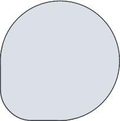

interactive simulator · gallery →

Control mode
Drag the ring to spin — or scroll the wheel (see ⚙).
Spin up → charge & roll · spin down → change the odds.
Pause around ⅔ → a little hidden surprise.
The side button powers it on / off.